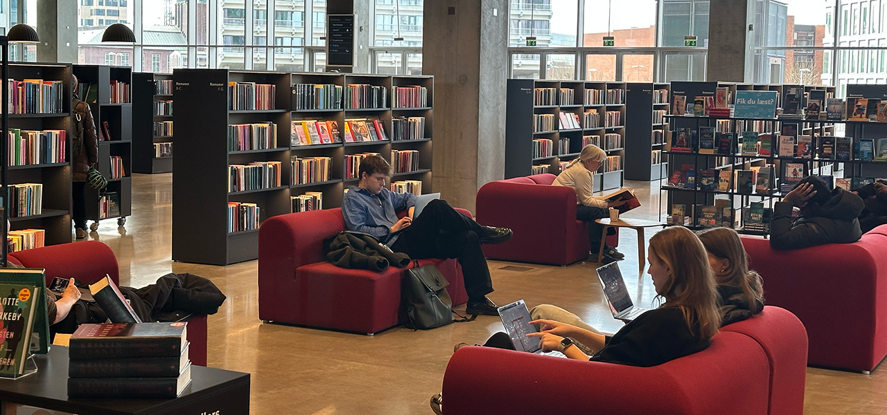
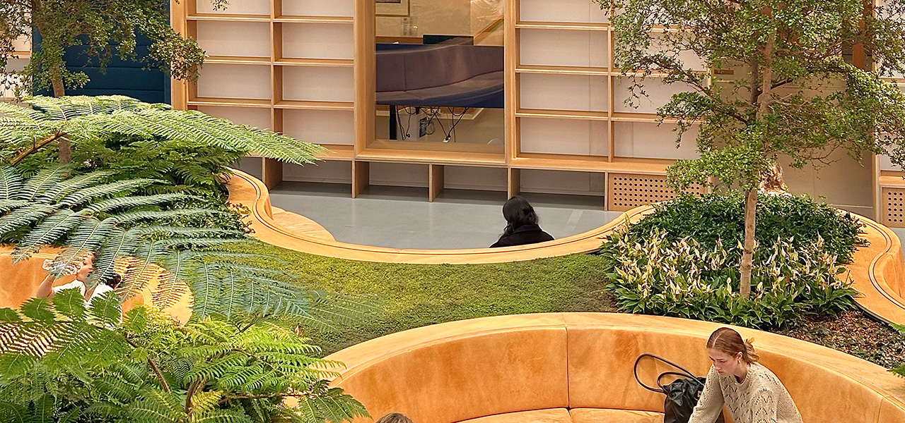
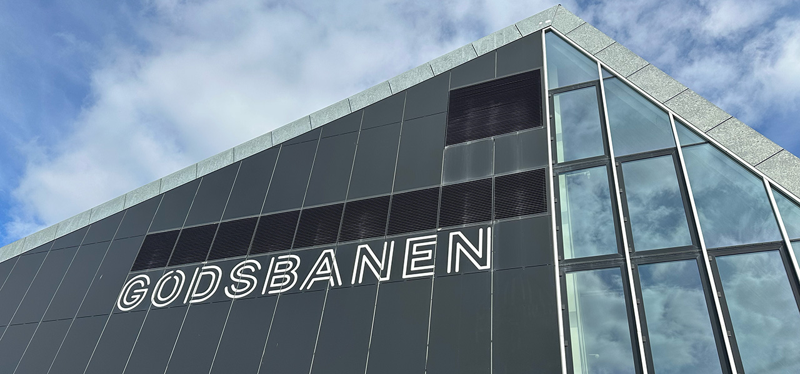

Dokk1: masser af pladser
Et moderne bibliotek og kulturcenter med store, lyse læseområder, digitale faciliteter og inspirerende mødesteder. Perfekt til både stille fordybelse og samarbejde.
Adresse: Hack Kampmanns Plads 2, 8000 Aarhus Centrum
Åbningstid: Alle dage 08:00 til 22:00
Læs mere her
Det kongelige bibliotek: optimalt studiemiljø
Det Kgl. Bibliotek i Aarhus tilbyder et roligt og inspirerende studiemiljø med komfortable læsepladser, gratis Wi-Fi og adgang til et stort udvalg af faglitteratur. Her kan du fordybe dig i stilhed eller finde en plads med udsigt over havnen. Ideelt til både gruppearbejde og selvstudie!
Adresse: Victor Albecks Vej 1, 8000 Aarhus
Åbningstid: Alle dage kl. 08:00 til 18:00
Læs mere her
GODSBANEN: rolig og god arbejdsatmosfære
Et kreativt og uformelt mødested med industrielt præg. Her finder du både stille zoner og sociale områder, som understøtter både individuel læsning og gruppearbejde.
Adresse: Karen Wegeners Gade 8, 8000 Aarhus
Åbningstid: Alle dage 08:00-22:00
Læs mere her